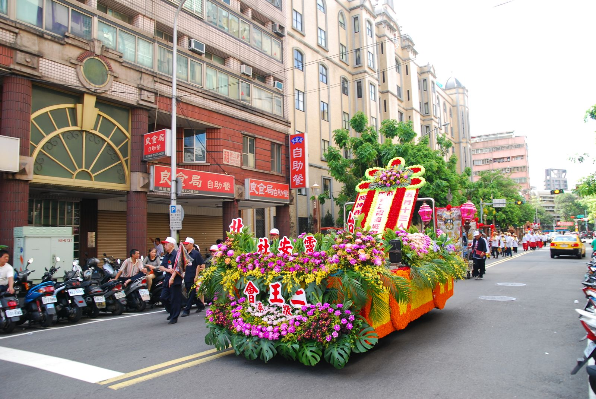

The bird that had to duck
Class L, Bloemencorso 2025. The route's limit was 4.00 m; the heron the association wanted stood 4.60 m. The neck learned to dip — and the prize went, correctly, to the association.
FLOAT OF GIANTS
The workshop journal of Klaassen Parade Works — floats designed & built in Lisse · Folio 01 · The Cover
Issue No. 14 — Parade Season 2027 · Klaassen Parade Works, Achterweg 14, Lisse
The Cover Story — Parade Season 2027

Everything this workshop makes is judged in a single morning. A float is designed for months, built for weeks, covered in flowers in the last four days of its life, and then — for about ninety minutes — it is the largest moving object on the street, watched by everyone it passes. Then it is dismantled, re-skinned, or stored. This journal is how we work, printed the way we print it for clients: the hours table, the fee table, the register, and the record, including the float that jammed.
Klaassen Parade Works builds for carnival associations, flower-parade committees and city festivals: full builds from a sketch to the start line, re-skins of sound old structures, flower work on other builders' frames, and the parade-day crew that walks the corners. The builder is Wouter Klaassen, who pinned dahlias as a schoolboy volunteer in this town and has welded chassis ever since. His opinion, printed here because it governs every estimate we send: a float that cannot be turned around in the shed yard cannot be turned around in the old town either — measure the street before you fall in love with the drawing.
The record, counted — Klaassen Parade Works, 2004–2026
63
floats built in the shed on Achterweg, from class S festival carts to an 18-metre corso giant
57
parade days walked by our own corner crews — the other six floats were collected by their associations
1,140
flower-hours worked on parade mornings and the nights before them, across 23 seasons
1
mechanism jammed on the avenue — the Swan, 2023. It is a case file on page 02, not a footnote
Every commission starts with the same three questions: how big, covered how, and how many weeks are left? The tables below are the workshop's own, printed in full. The planner reads them — set your answers and it lays out the build stage by stage, counts the flowers, and works backwards from parade day to the morning the pinning must start.
| Stage | S · 6 m | M · 10 m | L · 14 m | XL · 18 m |
|---|---|---|---|---|
| Design & model | 60 | 90 | 130 | 180 |
| Chassis & steel | 120 | 200 | 320 | 460 |
| Frame & form | 140 | 240 | 380 | 540 |
| Skin & surface | 110 | 180 | 280 | 390 |
| Lighting & mechanics | 40 | 70 | 120 | 170 |
| Class | Flower surface (m²) |
|---|---|
| S — 6 m float | 34 |
| M — 10 m float | 68 |
| L — 14 m float | 112 |
| XL — 18 m float | 158 |
| Stage | Crew |
|---|---|
| Design & model | 2 |
| Chassis & steel | 4 |
| Frame & form | 5 |
| Skin & surface | 4 |
| Lighting & mechanics | 2 |
| Method | Flowers / m² |
|---|---|
| Hand-pinned dahlias, full cover | 380 |
| Glued petal work | 240 |
| Rule | Figure |
|---|---|
| Pinning rate, flowers per hour | 1150 |
| Pinning crew, people | 10 |
| Pinning day, hours | 10 |
| A cut dahlia holds, days | 4 |
The rules that bind the planner: stages run in sequence, one crew at a time, forty hours a week. The flower week follows the build — flowers are never pinned onto an unfinished skin. And a cut dahlia holds four days, so the start of pinning is counted backwards from parade morning, never forwards from the delivery of the flowers.
| Stage | Hours (B1) | Crew (B2) | Weeks |
|---|
Klaassen's crew pinned the last dahlia at twenty to six in the morning and the Heron still made the start line at nine — but what I tell other chairs is simpler: his hours table has never lied to us. When he says a float needs twelve weeks, we book twelve weeks.
It belongs to one float, so it is printed beside that float's story and nowhere else. The full case file — brief, the dipping neck, the flower week, the outcome — is Case File 01, page 02.
Two things move a float's price before anything else: size class and flower area. A class up is not a little more float — it is roughly half as much again in hours, and the flower bill follows the surface, not the length. After those come lighting, the size of the parade-day crew, and the distance to the start line. Nothing else is charged that is not in this table.
| Line | Fee |
|---|---|
| Build fee — class S | €18,500 |
| Build fee — class M | €31,000 |
| Build fee — class L | €47,500 |
| Build fee — class XL | €68,000 |
| Flower work — hand-pinned, per m² | €46 |
| Flower work — glued petal, per m² | €29 |
| Lighting — none | €0 |
| Lighting — parade standard | €2,400 |
| Lighting — full animated | €5,900 |
| Parade-day crew, per person | €185 |
| Transport to the start line, flat | €620 |
An estimate, printed as a shape — the firm quote follows the design and the 1:20 model, and it is built from this same table, line by line. Nothing is added later that is not in Table F1.
Class L, Bloemencorso 2025. The route's limit was 4.00 m; the heron the association wanted stood 4.60 m. The neck learned to dip — and the prize went, correctly, to the association.

Class M, 2023. A late repaint bridged the turntable gap; at the second judging point the swan's head stopped. What failed, what it cost, and the rule it wrote into every build since.

Built 2024, re-skinned 2026 for 38% of the new-build fee. The honest economics of re-use: what was kept, what was new, and what we told the association not to save on.
Enquiries — 2027 Season
Floats are booked in the order the parade calendar demands, and the planner above will already tell you whether your date is possible. If it is — or if it says no and you want to talk about a smaller class or a re-skin — there is one door: